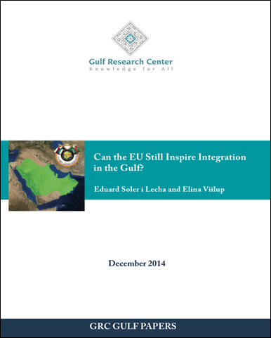

|  |
|
| Title: Can the EU Still Inspire Integration in the Gulf? Author: Eduard Soler i Lecha, Elina Viilup Publisher: Gulf Research Center Date: December 9th, 2014 Abstract: Despite the fact that the EU finds itself confronted by a deep multi-faceted crisis at the institutional, economic, political and foreign policy level which undoubtedly has affected the EU's attraction as an integration model and can be expected to hamper the EU's image and reputation as a 'source of inspiration' further in the future, this paper argues that the EU continues still continues to set a relevant example for those regions and countries, such as the Gulf countries, which want to move forward on the path of regional integration. In the view of the authors, it is especially in the way that the EU has been coping with crises, and the solutions that have been found to the current challenges, that may provide invaluable lessons to other countries and regions which may face similar problems in the future. |
|